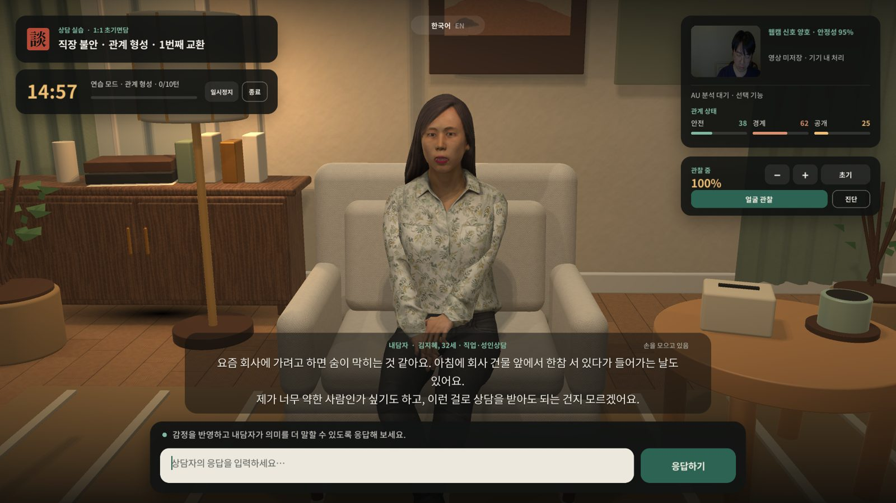
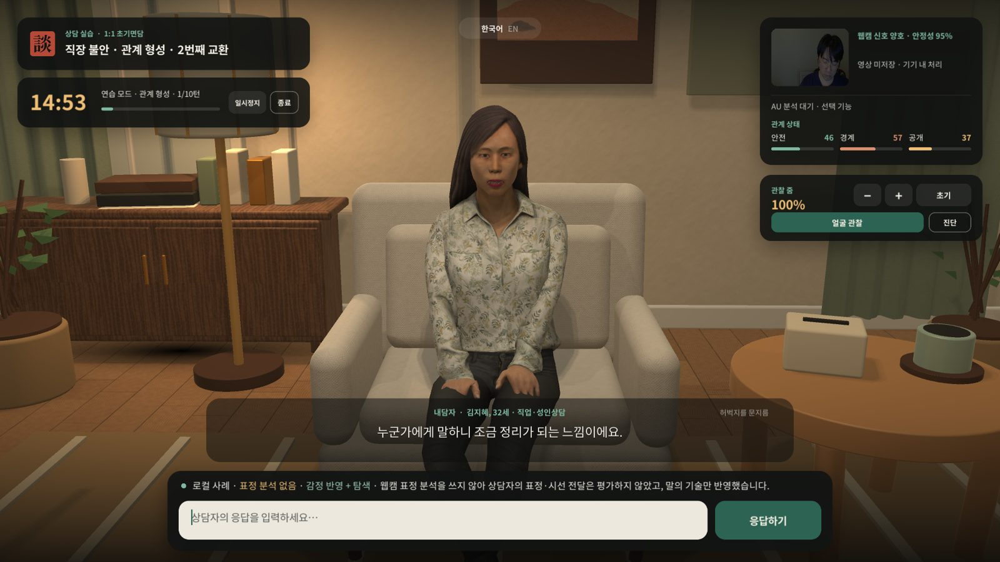
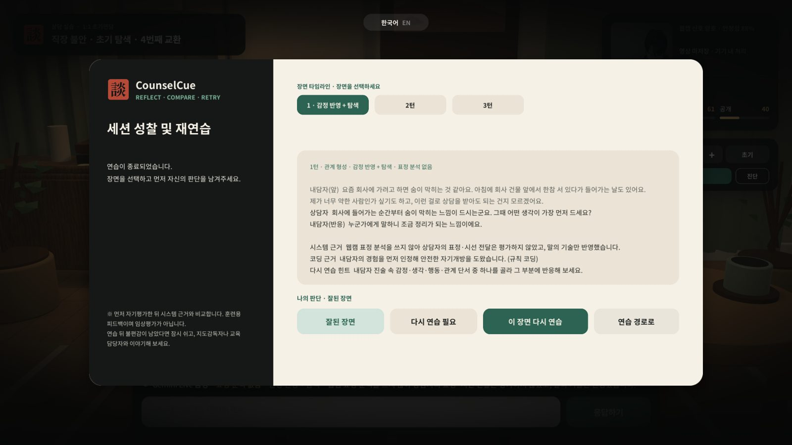
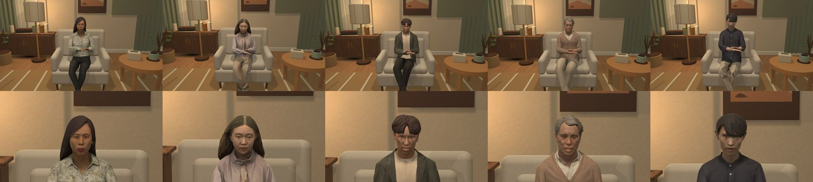
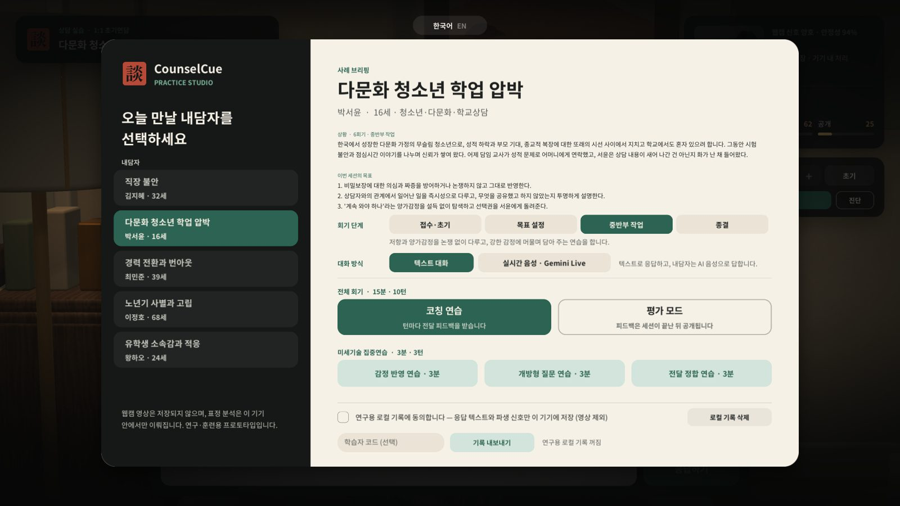
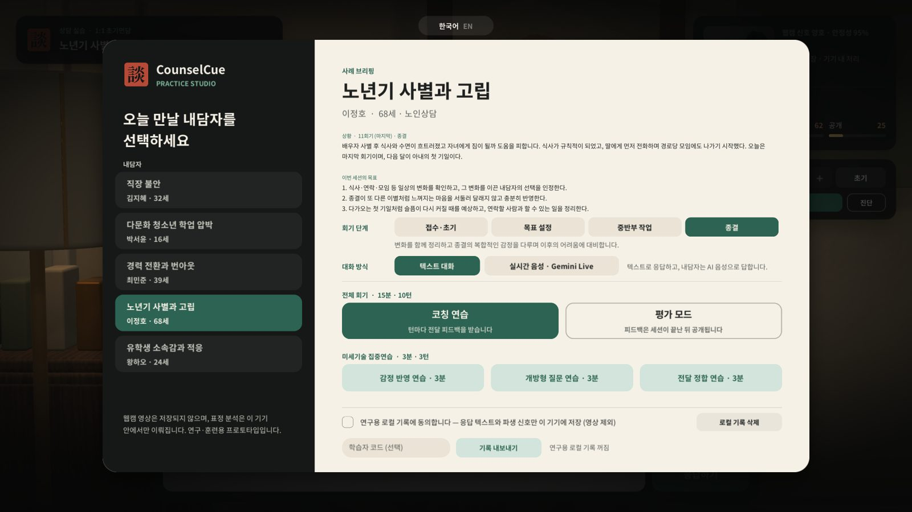
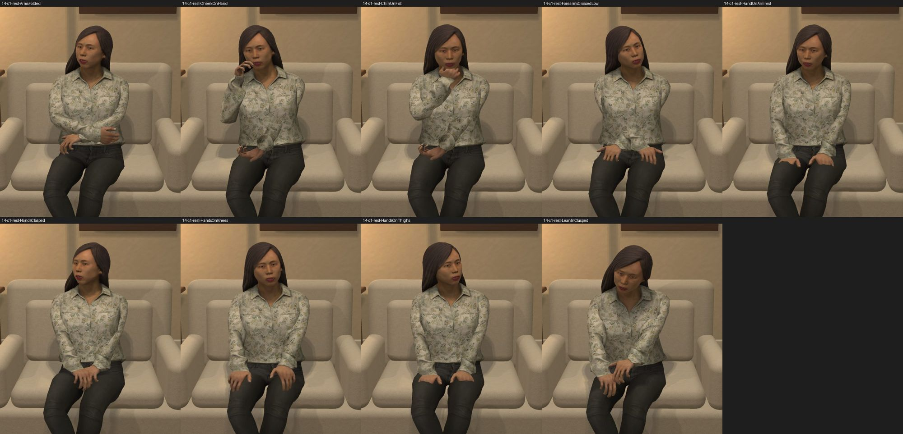
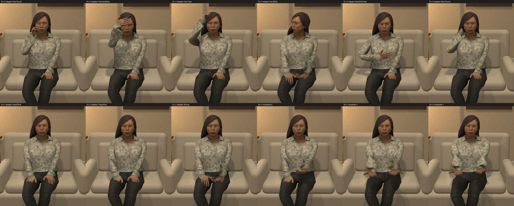
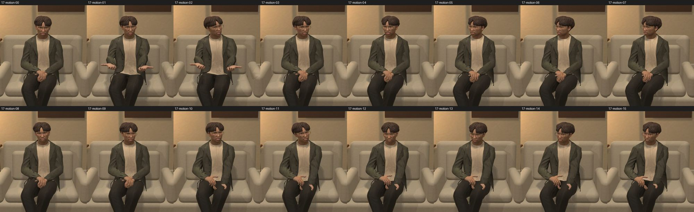

CounselCue는 상담 전공 학습자가 AI 내담자와 실제처럼 대화하며 감정 반영·개방형 질문·공감 같은 상담 기술을 연습하는 웹 시뮬레이터입니다. 매 응답을 상담 기술로 코딩하고, 관계 안전감·경계·개방성의 변화와 반복되는 반응 패턴을 근거로 성찰하도록 돕습니다.
데스크톱 Chrome·Edge 권장 · 첫 실행 시 약 26MB 로딩 · 소리는 시작 버튼을 누른 뒤 재생됩니다.

사례를 고르고 코칭 연습 또는 평가 모드로 상담을 시작합니다. 텍스트나 마이크로 응답하면 내담자가 사례별 페르소나와 현재 관계 상태에 맞춰 음성·표정·시선·몸짓으로 반응합니다.
사례별 페르소나가 이전 대화와 관계 상태를 기억하며 답합니다. 마음이 열릴수록 감정·생각·행동·관계 단서가 섞인 3–4문장으로 길게 이야기해, 무엇에 반응할지 스스로 고르게 합니다.
Gemini Live로 말로 상담할 수 있습니다. 말을 끊으면 내담자가 멈추고, 입 모양은 음성에 맞춰 움직입니다. 텍스트 모드에서는 사례별 성별·연령에 맞는 목소리로 답합니다.
LLM 코더가 공유 코드북(감정 반영, 반영+탐색, 공감, 개방형·닫힌·'왜' 질문, 성급한 조언·안심)으로 코딩하고, 오프라인에서는 규칙 코더가 대신합니다.
안전감·경계·개방성이 응답에 따라 조금씩 움직입니다. 연구 데이터로 다시 보정할 수 있는 모델이라, 무엇이 관계를 여는지 수치로 확인합니다.
세션이 끝나면 장면마다 먼저 자신의 판단을 남긴 뒤 시스템 근거·주목할 단서·다른 반응 예를 봅니다. 한 장면만 다시 연습해도 나머지 기록은 그대로 남습니다.
학습자 코드로 내보낸 기록을 모아 학습자별 응답 구성, 관계 궤적, 반복되는 반응 패턴과 쓰지 않은 핵심 기술을 한 화면에서 봅니다.


나이·문화·호소 문제가 다른 내담자를 각각의 3D 캐릭터와 목소리, 말투, 몸짓으로 구성했습니다.

같은 내담자를 상담의 여러 시점에서 만납니다. 단계마다 내담자의 첫 말, 관계 상태, 학습 목표, AI 내담자의 태도가 달라집니다(『상담면접의 기초』의 과정 구분, Hill의 탐색–통찰–실행 모델 참고).
관계를 형성하고 비밀보장을 안내하며 호소 문제를 탐색합니다.
막연한 바람을 구체적인 목표로 바꾸고 강점·자원·동기를 평가합니다.
저항과 양가감정을 논쟁 없이 다루고, 강한 감정에 머물러 담아주는(버티기·담아두기) 연습을 합니다.
변화를 함께 정리하고 종결의 복합적인 감정을 다루며 이후의 어려움에 대비합니다.


불안한 내담자는 손을 비비거나 목을 만지는 자기접촉 행동이 늘고 말에 붙는 손짓은 줄어듭니다. 경계할 때는 팔을 모으고 몸을 뒤로 기대며, 안전해질수록 몸이 앞으로 기울고 손바닥을 펴 보입니다. 애도 중인 내담자는 몸짓이 작고 느려집니다. 이런 연구 결과를 바탕으로 관계 상태와 정서, 내담자별 특성에 따라 몸짓의 종류·빈도·크기가 달라집니다.



자막 옆에 "손을 비빔 · 시선을 아래로"처럼 두드러진 비언어 단서를 조용히 보여 줘, 반영할 거리를 놓치지 않게 합니다.
말하는 동안 고개를 좌우로 자주 돌리지 않고 눈이 먼저 움직입니다. 시선 회피는 정서와 관계 상태에 따라 가끔, 한 방향으로만 일어납니다.
상담자는 다리를 꼬고 무릎 위 메모장에 펜을 든 채 앉아 있습니다. 응답을 입력하면 시선이 잠시 메모로 내려갔다가 내담자에게 돌아옵니다.
개별 응답의 적절성을 넘어, 학습자가 어떤 유형의 반응을 반복해서 고르는지 분석합니다. 세션이 끝나면 반응 유형 분포, 쓰지 않은 핵심 기술, 같은 반응의 연속을 요약하고, 강사 대시보드에서 세션 전체를 모아 봅니다.
예: "닫힌 질문 3회 연속 · 덜 쓴 기술: 감정 반영, 공감". 주로 쓰는 기술과 취약한 영역을 함께 보여 줍니다.
내담자 진술에서 반응할 수 있었던 단서(감정·사고·행동·관계)와 다른 반응 예를 제시해, 같은 장면을 다시 연습할 때 방향을 잡게 합니다.
전문가 코딩과의 일치도(Cohen's κ, F1)를 지속적으로 확인하고 기준치 아래로 떨어지면 빌드에서 알립니다. 연구 기록은 스키마 버전으로 관리합니다.
둘러보는 정도로도 충분합니다. 아래 순서로 한 세션을 체험해 보세요.
웹캠 영상은 저장되지 않으며 표정 분석은 기기 안에서만 이뤄집니다. 연구 기록은 동의한 경우에만, 응답 텍스트와 파생 신호만 기기에 저장됩니다. 훈련·연구용 프로토타입이며 임상 평가 도구가 아닙니다.